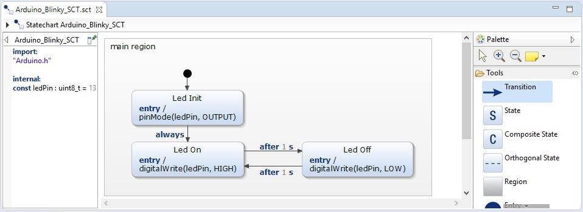

[Pro] Blinky LED (C++) for Arduino
This is a simple example of how to use the C/C++ Domain together with an Arduino. C++ Timer are integrated.
The underlying statechart looks as follows: 
Addons for compiling and flashing
For compiling and flashing the Eclipse C++ IDE for Arduino plugin has been used. This can be found at 'https://marketplace.eclipse.org/content/eclipse-c-ide-arduino'. Please ensure that you have installed the Arduino toolchain. This can easily be done by installing the Arduino IDE, which can be found here: 'https://www.arduino.cc/en/Main/Software'. It is not possible to compile code with the Eclipse C++ IDE for Arduino plugin without an installed toolchain!
How to install the Eclipse C++ IDE for Arduino plugin
This instructions shows step by step of how to install the plugin.
- Click on 'Help' -> 'Install New Software..' -> 'Add...'.
- Define a name and add 'http://download.eclipse.org/tools/cdt/releases/9.3' as location. Notice that this update site could be outdated. The current update site can be found on the marketplace.
- Use the filter and type 'Arduino C++ Tools'. Choose this feature and click on 'Next..'. Follow installation instructions.
- The installation dialog will ask you for a restart. After this restart is done, the installition has been finished.
Using the Eclipse C++ IDE for Arduino plugin
After the installation you should notice a new Toolbar, which allows you to compile and flash your Arduino.
- First of all, your project should contain no errors any more.
- To get started you need to configure the desired platform. Choose your personal settings and board. Most of the Arduinos (Uno, Due, Mega, etc.) should be supported. Plug in your Arduino and click on 'New Launch Target..'.
- Set up your device. This depends on your system and configuration.
- Build project.
- Upload the example.
- Your Arduino onboard LED should start blinking now!